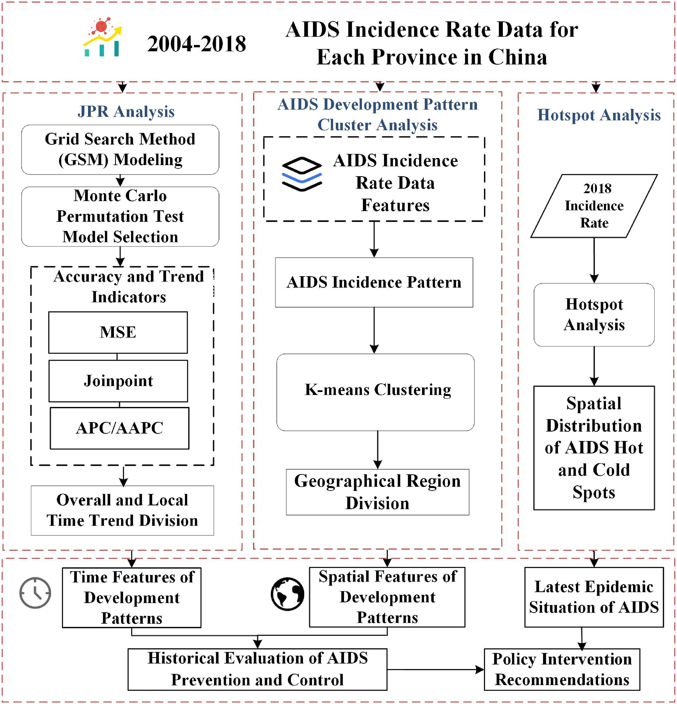
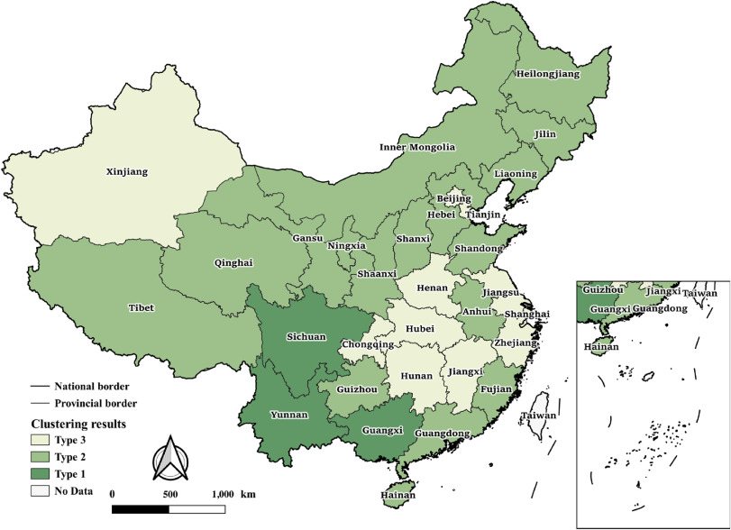
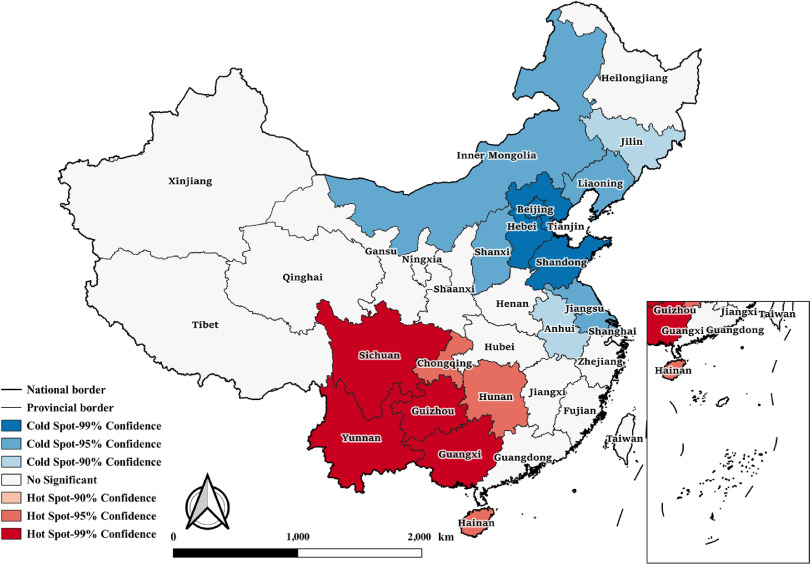

A study using panel data with Joinpoint Regression, K-Means Clustering, and Getis-Ord Gi* Hotspot Analysis on incidence, mortality, and prevalence (2004–2018)
Health & Place · 2024
HIV/AIDS remains one of the most severe global public health challenges, with nearly one million deaths annually from HIV-related causes. Since China reported its first case in 1985, the epidemic has evolved through three phases: introduction (1985–1988), expansion (1989–1994), and widespread dissemination (1995–present). Previous studies have largely focused on single-time-point spatial analysis or aggregate temporal trends, lacking an integrated examination of local turning points, regional clustering, and spatial hotspots. This study uniquely combines Joinpoint Regression (JPR), K-Means clustering, and Getis-Ord Gi* hotspot analysis, using incidence, mortality, and prevalence data for 31 Chinese provinces (2004–2018) from the Chinese Public Health Science Data Center.
HIV/AIDS has been one of the most significant global public health threats since its emergence. Approximately 37.9 million people live with HIV worldwide, with nearly one million dying from HIV-related causes each year. Since China reported its first case in 1985, the epidemic has progressed through three distinct phases: the introduction phase (1985–1988), characterized by imported cases; the expansion phase (1989–1994), marked by localized transmission among injection drug users (IDUs); and the widespread dissemination phase (1995–present), affecting all 31 provinces with sexual transmission becoming the dominant route.
Three critical gaps remain in prior research: the lack of systematic identification of localized temporal turning points (segment-specific APCs); the absence of quantitative clustering of provinces based on epidemic trajectory similarity; and insufficient understanding of spatial aggregation and the evolution of hotspots. This study addresses these gaps by chaining JPR temporal analysis, K-Means spatial clustering, and Gi* hotspot detection into an integrated framework, systematically characterizing the spatiotemporal evolution of HIV/AIDS across China's 31 provinces from 2004 to 2018.
All data were sourced from the Chinese Public Health Science Data Center (www.phsciencedata.cn), the public data portal of the Chinese Center for Disease Control and Prevention (CDC). Three core indicators — annual incidence, annual mortality, and annual prevalence — were collected for all 31 provinces, autonomous regions, and municipalities (excluding Hong Kong, Macau, and Taiwan) spanning 15 years from 2004 to 2018. Key data limitations include: the dataset begins only in 2004, precluding analysis of earlier transmission chains; provincial-level data mask within-province heterogeneity at the prefectural and county levels; and the dataset does not disaggregate contributions by transmission route (sexual, blood-borne, mother-to-child).

Phase 1 — temporal dimension analysis. A Grid Search Method was used to identify the optimal number and location of joinpoints, with Monte Carlo permutation tests (default 4,499 permutations) for model selection and significance assessment. The core outputs are the Annual Percent Change (APC) for each identified segment and the Average Annual Percent Change (AAPC) over the entire study period.
Phase 2 — based on the JPR results, 30 curve-level features (mean, variance, skewness, kurtosis, entropy, autocorrelation, cumulative sum characteristics, etc.) were extracted for each province. K-Means clustering was then applied to group provinces with similar epidemic trajectory patterns. The Elbow Method determined the optimal number of clusters as k = 3.
Phase 3 employed the Getis-Ord Gi* spatial autocorrelation statistic to detect statistically significant clusters of high values (hotspots) and low values (cold spots) of HIV/AIDS burden, precisely mapping the clustering results onto geographic space. Together, the three phases form a complete logical progression: temporal turning point → spatial grouping → spatial hotspot.
At the national level, the AAPC was 23.2%, with all 31 provinces showing an increasing trend. The model identified 2012 as the national turning point: before the joinpoint (2004–2012), APC = 34.71%, reflecting rapid growth; after the joinpoint (2012–2018), APC dropped sharply to 9.30%. Southwestern provinces (Guangxi, Yunnan, Sichuan) consistently showed the fastest growth rates nationwide.
K-Means clustering partitioned the 31 provinces into three epidemiologically distinct regions: Cluster 1 (Southwest: Guangxi, Yunnan, Sichuan, Chongqing, Guizhou, Hainan) — dominated by injection drug use (IDU) transmission, with the most severe epidemic burden; Cluster 2 (Central & Eastern: Henan, Hubei, Hunan, Anhui, Zhejiang, Guangdong, etc.) — historically driven by blood-borne transmission from illegal plasma collection, with moderate burden; Cluster 3 (Other regions: Beijing, Shanghai, Tibet, Qinghai, Xinjiang, etc.) — characterized by secondary transmission, with relatively low burden.

The Getis-Ord Gi* results strongly aligned with the clustering patterns: seven hotspot provinces (Sichuan, Chongqing, Yunnan, Guangxi, Guizhou, Hunan, Hainan) concentrated in the Southwest, while ten cold-spot provinces were distributed along the eastern coast and in the north. The Southwest consistently formed the core transmission area, with hotspot boundaries remaining relatively stable over the study period. Notably, Guangxi pioneered local policies such as needle exchange programs and methadone maintenance treatment in 2011, achieving the most pronounced turning-point effect after 2012 — establishing the "Guangxi Model" as a replicable blueprint for precision intervention.

The core innovation of this study lies in the three-stage cascading logic — "temporal turning point → spatial grouping → spatial hotspot." JPR identifies turning points in the pure temporal dimension, K-Means maps temporal trends onto spatial groupings, and Gi* further pinpoints those groupings as hot or cold spots in geographic space. No prior study has integrated these three methods into a unified spatiotemporal framework for HIV/AIDS analysis.
The 2012 turning point closely aligns with China's 12th Five-Year Plan (2011–2015), during which the government substantially expanded HIV testing coverage, scaled up antiretroviral therapy (ART), and strengthened interventions targeting high-risk populations (needle exchange, methadone maintenance, condom promotion). Guangxi's early adoption of IDU-targeted policies in 2011 produced the most pronounced turning-point effect among all provinces, suggesting that localized, precision interventions are far more effective than generalized national measures.
The dataset begins only in 2004, the provincial resolution cannot capture intra-provincial disparities, and transmission-route-specific contributions remain unmeasured. Future research should adopt county-level analysis with higher granularity and incorporate transmission-route-specific data to enable more refined, targeted prevention and control strategies.
@article{GUI2024103353,
title={Uncovering spatiotemporal development patterns of AIDS
in China: A study using panel data with Joinpoint
Regression analysis and Spatial Clustering},
author={Gui, Shu-nan and Zhang, Xiang and Sun, Zhenhui and
Yao, Yao},
journal={Health & Place},
volume={90},
pages={103353},
year={2024},
doi={10.1016/j.healthplace.2024.103353}
}